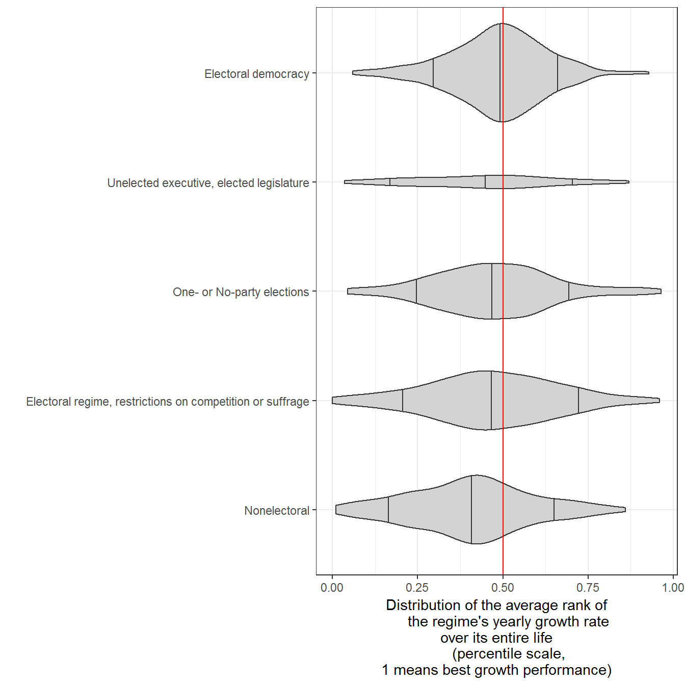
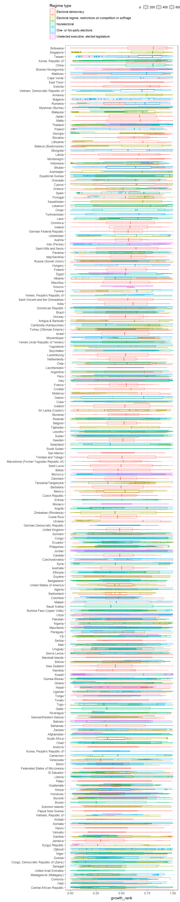
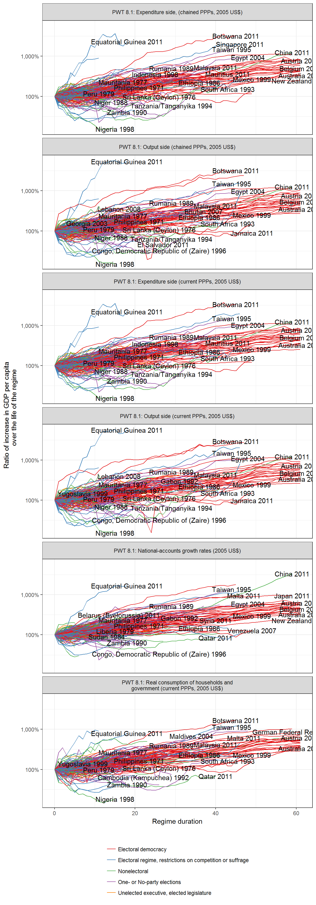
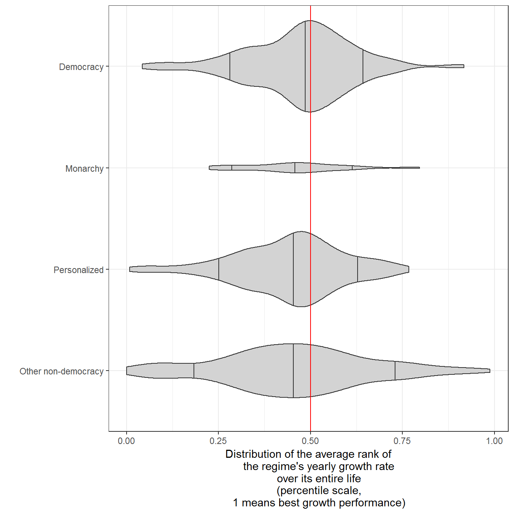
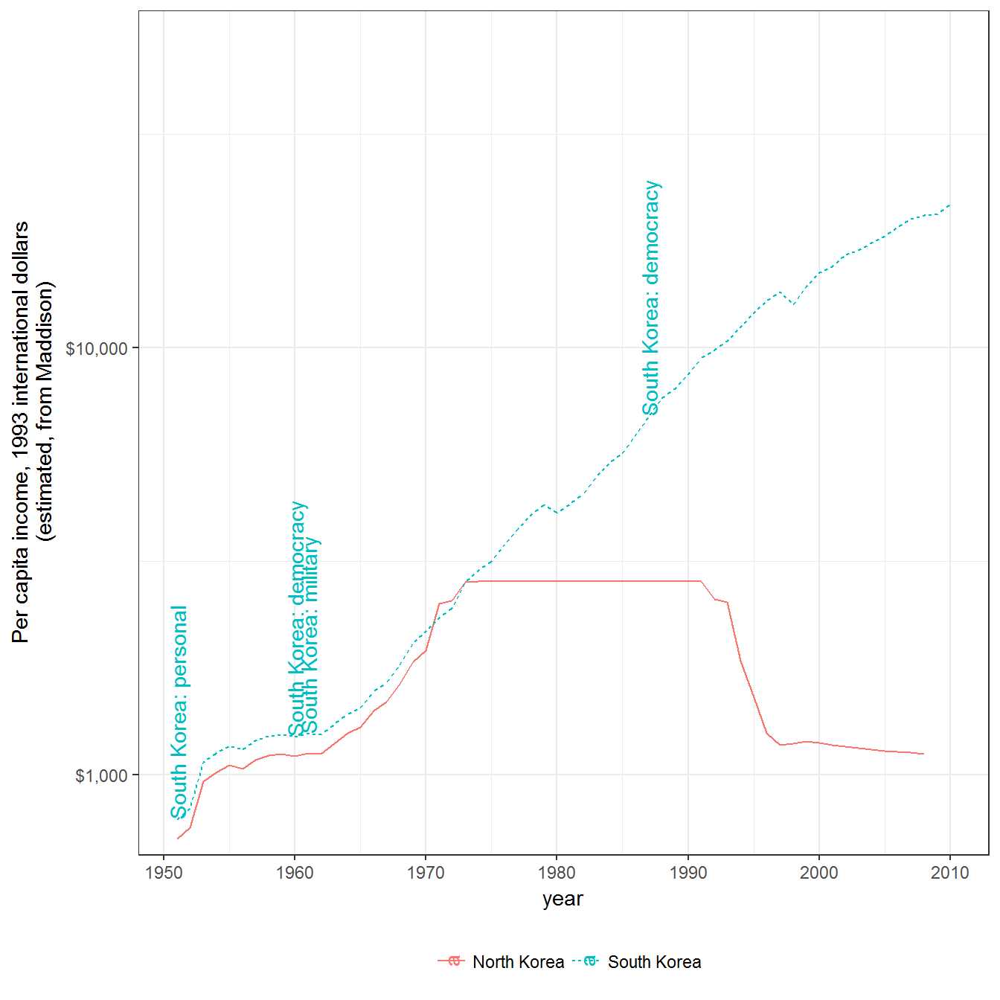
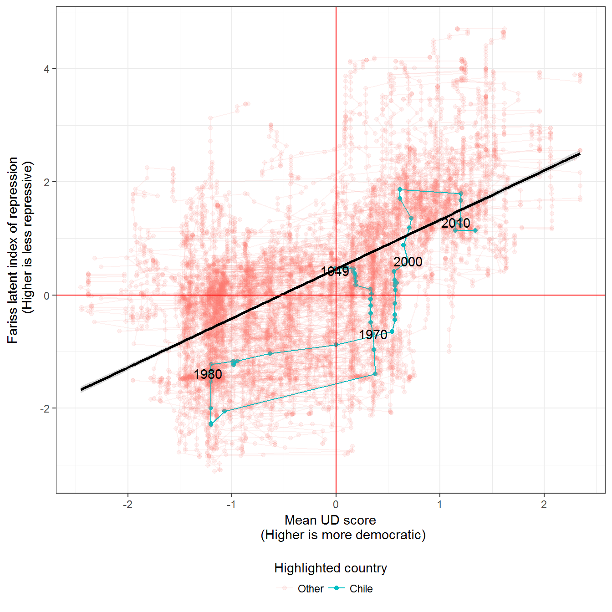
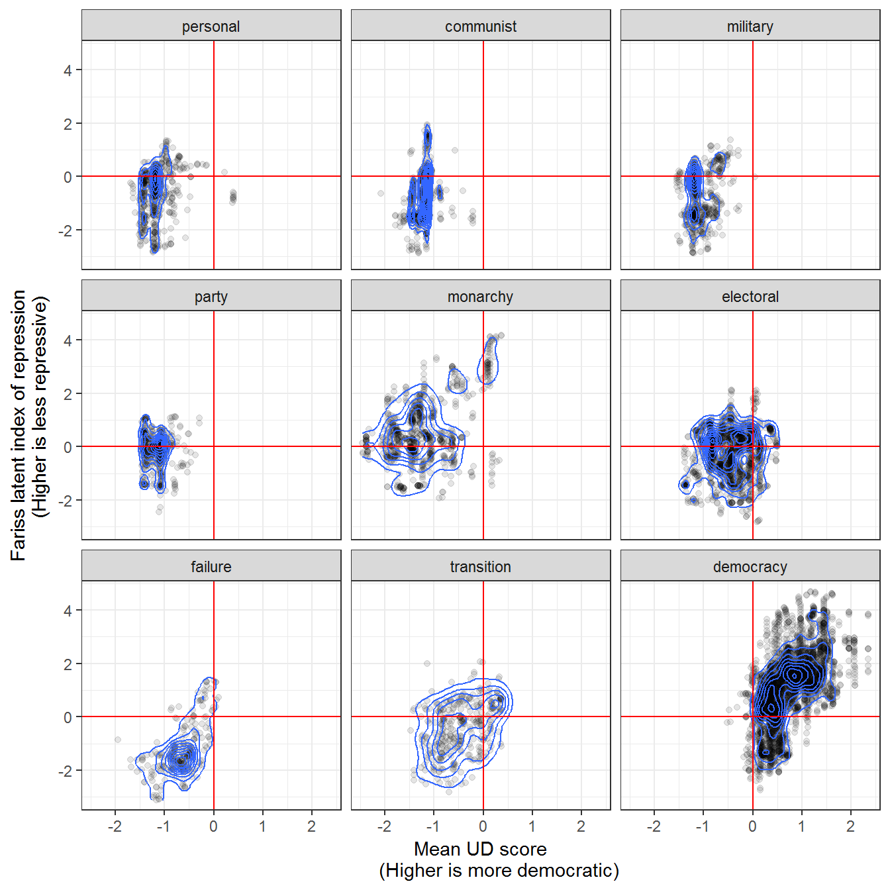
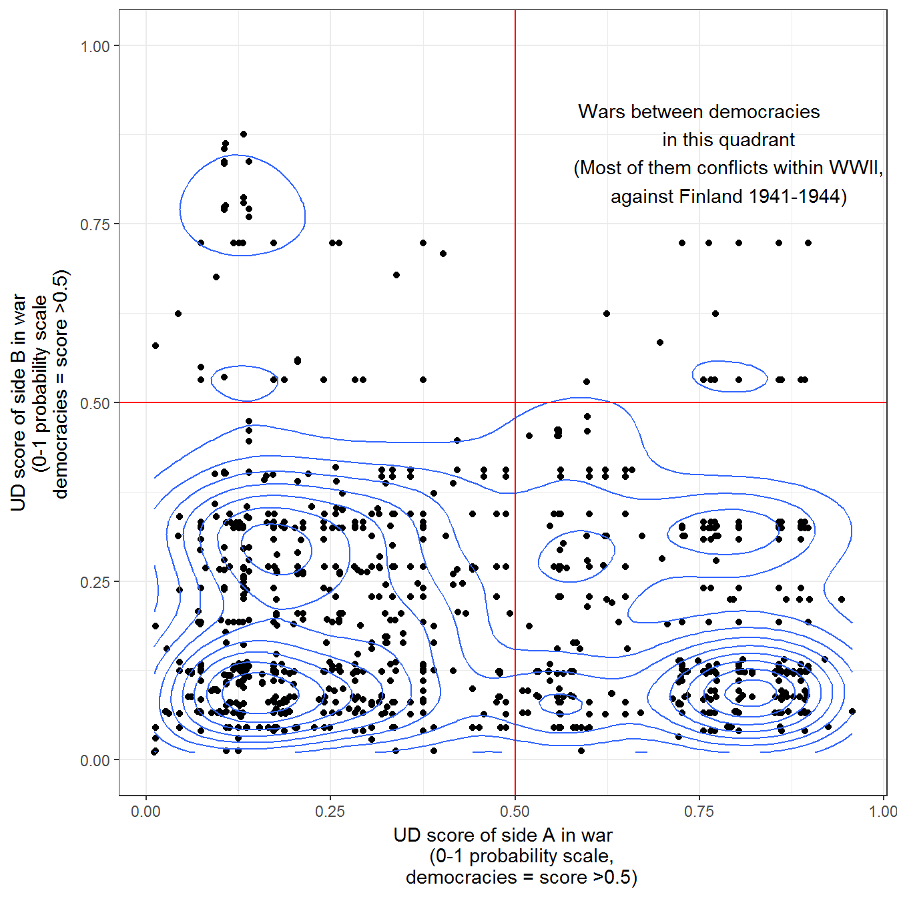
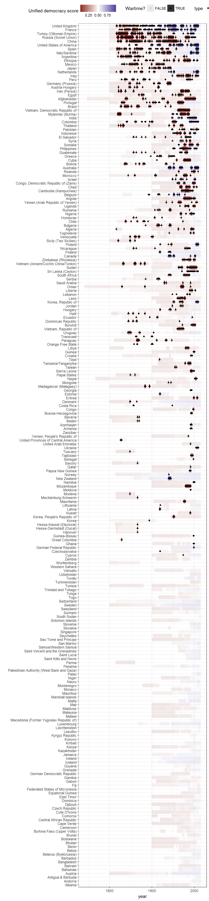

This vignette shows how to replicate and extend the charts in chapter 9 of my book Non-democratic Politics: Authoritarianism, Dictatorships, and Democratization (Palgrave Macmillan, 2016). It assumes that you have downloaded the replication package as follows:
if(!require(devtools)) {
install.packages("devtools")
}
devtools::install_github('xmarquez/AuthoritarianismBook')It also assumes you have the dplyr, ggplot2, scales, forcats, ggrepel, reshape2, and knitr packages installed:
if(!require(dplyr)) {
install.packages("dplyr")
}
if(!require(ggplot2)) {
install.packages("ggplot2")
}
if(!require(scales)) {
install.packages("forcats")
}
if(!require(forcats)) {
install.packages("scales")
}
if(!require(ggrepel)) {
install.packages("ggrepel")
}
if(!require(reshape2)) {
install.packages("reshape2")
}
if(!require(knitr)) {
install.packages("knitr")
}For the interactive graph below, you also need the highcharter package:
if(!require(highcharter)) {
install.packages("highcharter")
}This figure attempts to give a sense of the distribution of the average ranks of yearly growth rates of different regime types, 1950-2014. Since growth rates are volatile and affected by the total state of the world economy at any given time, we do not compare growth rates directly. Instead, we first calculate the growth rate percentile rank for each regime in each year (1 = highest growth in year, 0 - lowest growth in year), and then average these ranks over the entire life of the regime (so, for example, Singapore, an electoral regime with restrictions on competition, averaged a 0.7 from 1965 until 2014, a consistently high growth performer). Each violin then shows the distribution of these averages by regime type, with vertical bars indicating the bottom 10 percent, the median, and the top 10 percent of regimes (so, for example, we can see that the median democratic regime has produced growth in the top 50% of growth rates, when averaged over the life of the regime). Regime data comes from LIED (Skaaning, Gerring, and Bartusevičius 2015), extending the PIPE dataset from Przeworski (2013); economic growth data comes from the Maddison project (The Maddison Project 2013), the Penn World Tables (Feenstra and Timmer 2013), and the World Bank. There are a total of 793 regimes in the sample (median duration 5 years, though electoral democracies in the sample tend to last longer); areas are scaled to the number of observations in each category.
library(AuthoritarianismBook)
library(dplyr)
library(ggplot2)
count_sequence_breaks <- function(seq, seq_step = 1) {
first_diff <- c(seq_step, diff(seq)) - seq_step
periods <- cumsum(abs(first_diff))
periods
}
data <- economic_data %>%
arrange(country_name, GWn, year, variable) %>%
group_by(country_name, variable) %>%
mutate(num_years = c(NA, diff(year))) %>%
filter(num_years == 1, year >= 1950) %>%
left_join(lied %>% select(-in_system)) %>%
mutate(regime = ifelse(lexical_index %in% c(3,5,4),
"Electoral regime, restrictions on competition or suffrage",
ifelse(lexical_index %in% c(2),
"Unelected executive, elected legislature",
regime))) %>%
filter(!is.na(regime)) %>%
group_by(country_name) %>%
mutate(regime_num = count_sequence_breaks(unclass(factor(regime)), seq_step = 0)) %>%
group_by(variable,year) %>%
mutate(growth_rank = percent_rank(per_capita_growth)) %>%
ungroup() %>%
group_by(country_name, regime_num, regime) %>%
summarise(growth_rank = mean(growth_rank,na.rm=TRUE),
min_year = min(year),
max_year = max(year),
n = n(),
total_length = max_year - min_year)## Joining, by = c("country_name", "GWn", "year")ggplot(data = data,
aes(x = reorder(regime, growth_rank, FUN = "median"),
y = growth_rank)) +
geom_violin(draw_quantiles = c(0.1,0.5,0.9),
fill="lightgrey",
scale="count") +
theme_bw() +
labs(y = "Distribution of the average rank of
the regime's yearly growth rate \nover its entire life
(percentile scale, \n1 means best growth performance)",
x = "") +
theme(legend.position = "bottom") +
coord_flip() +
geom_hline(yintercept = 0.5, color = "red")
There are a couple of ways of disaggregating this data. We can show the actual growth ranks:
data <- economic_data %>%
arrange(country_name, GWn, year, variable) %>%
group_by(country_name, variable) %>%
mutate(num_years = c(NA, diff(year))) %>%
filter(num_years == 1, year >= 1950) %>%
left_join(lied %>% select(-in_system)) %>%
mutate(regime = ifelse(lexical_index %in% c(3,5,4),
"Electoral regime, restrictions on competition or suffrage",
ifelse(lexical_index %in% c(2),
"Unelected executive, elected legislature",
regime))) %>%
filter(!is.na(regime)) %>%
group_by(country_name) %>%
mutate(regime_num = count_sequence_breaks(unclass(factor(regime)), seq_step = 0)) %>%
group_by(variable,year) %>%
mutate(growth_rank = percent_rank(per_capita_growth)) %>%
ungroup() %>%
group_by(country_name, regime_num, regime) %>%
mutate(min_year = min(year),
max_year = max(year),
n = n(),
total_length = max_year - min_year) %>%
ungroup()## Joining, by = c("country_name", "GWn", "year")ggplot(data = data,
aes(x = reorder(country_name, growth_rank),
y = growth_rank,
color = regime)) +
geom_boxplot(aes(alpha = n,
group = paste(country_name, regime, regime_num)),
varwidth = TRUE) +
geom_violin(alpha = 0.3) +
labs(x = "",
color = "Regime type") +
theme_bw() +
theme(legend.position = "top") +
guides(color = guide_legend(title.position = "top", ncol = 1)) +
coord_flip()
Or we can plot the actual income trajectories:
data <- economic_data %>%
arrange(country_name, GWn, year, variable) %>%
filter(!is.na(per_capita), year >= 1950) %>%
inner_join(lied %>% select(-cown:-in_system)) %>%
mutate(regime = ifelse(lexical_index %in% c(3,5,4),
"Electoral regime, restrictions on competition or suffrage",
ifelse(lexical_index %in% c(2),
"Unelected executive, elected legislature",
regime))) %>%
filter(!is.na(regime)) %>%
group_by(country_name) %>%
mutate(regime_num = count_sequence_breaks(unclass(factor(regime)), seq_step = 0)) %>%
group_by(variable, country_name, regime_num) %>%
arrange(year) %>%
mutate(time = year - first(year),
normalized_income = per_capita/first(per_capita)) %>%
ungroup() ## Joining, by = c("country_name", "GWn", "year")ggplot(data = data %>% filter(primary_source == "PWT8.1"),
aes(x = time,
y = normalized_income,
color = regime,
group = paste(country_name, regime_num))) +
geom_path() +
geom_text(data = data %>%
group_by(country_name, variable) %>%
filter(time == max(time, na.rm=TRUE),
primary_source == "PWT8.1"),
aes(x = time,
y = normalized_income,
label = paste(country_name, year)),
check_overlap = TRUE,
color = "black") +
theme_bw() +
labs(y = "Ratio of increase in GDP per capita
over the life of the regime",
x = "Regime duration",
color = "") +
theme(legend.position = "bottom") +
guides(color = guide_legend(title.position = "top", ncol = 1)) +
scale_color_brewer(type = "qual", palette = "Set1") +
scale_y_log10(labels = scales::percent) +
facet_wrap(~variable, ncol = 1)
As in the previous figure, we first calculate the growth rate percentile rank for each regime in each year (1 = highest growth in year, 0 - lowest growth in year), and then average these ranks over the entire life of the regime. Each violin shows the distribution of these averages by regime type, with vertical bars indicating the bottom 10 percent, the median, and the top 10 percent of regimes. Regime data comes from Geddes, Wright, and Frantz (2014); economic growth data comes from the Maddison project (The Maddison Project 2013), the Penn World Tables (Feenstra and Timmer 2013), and the World Bank. There are a total of 461 regimes in the sample (median duration 10 years, though some last much longer); areas are scaled to the number of observations in each category.
data <- economic_data %>%
arrange(country_name, GWn, year, variable) %>%
group_by(country_name, variable) %>%
mutate(num_years = c(NA, diff(year))) %>%
filter(num_years == 1,year >= 1950) %>%
left_join(all_gwf_extended_yearly %>%
select(-in_system)) %>%
filter(!is.na(gwf_full_regimetype)) %>%
group_by(variable, year) %>%
mutate(growth_rank = percent_rank(per_capita_growth)) %>%
ungroup() %>%
mutate(regime = ifelse(grepl("monarchy",gwf_full_regimetype),
"Monarchy",
ifelse(grepl("democracy", gwf_full_regimetype),
"Democracy",
ifelse(grepl("personal", gwf_full_regimetype),
"Personalized", "Other non-democracy")))) %>%
group_by(gwf_casename,country_name,regime) %>%
summarise(growth_rank = mean(growth_rank, na.rm=TRUE),
min_year = min(year),
max_year = max(year),
n = n(),
total_length = max_year - min_year)## Joining, by = c("country_name", "GWn", "year")ggplot(data = data,
aes(x = reorder(regime, growth_rank, FUN="median"),
y=growth_rank)) +
geom_violin(draw_quantiles = c(0.1,0.5,0.9),
fill="lightgrey",
scale="count") +
theme_bw() +
labs(y = "Distribution of the average rank of
the regime's yearly growth rate
over its entire life
(percentile scale,
1 means best growth performance)",
x = "") +
theme(legend.position = "bottom") +
coord_flip() +
geom_hline(yintercept = 0.5, color = "red")
Income per capita in North and South Korea, 1950-2010. Regime data from Geddes, Wright, and Frantz (2014). Income per capita data comes from the Maddison Project (The Maddison Project 2013), in 1993 international dollars. Numbers for North Korea are educated guesswork; figures from 1970-1993 are likely interpolated.
data <- economic_data %>%
filter(primary_source == "Maddison",
grepl("Korea",country_name),
year > 1950) %>%
left_join(all_gwf_extended_yearly %>% select(-in_system)) %>%
mutate(country_name = plyr::mapvalues(country_name,
from = c("Korea, People's Republic of",
"Korea, Republic of"),
to = c("North Korea",
"South Korea"))) %>%
mutate(num_regime = unclass(as.factor(gwf_full_regimetype))) %>%
group_by(country_name) %>%
mutate(period = count_sequence_breaks(num_regime, seq_step=0)) %>%
group_by(country_name, period) %>%
mutate(first_year = min(year))## Joining, by = c("country_name", "GWn", "year")ggplot(data = data, aes(x = year,
y = per_capita,
linetype = country_name,
color = country_name)) +
geom_path() +
scale_y_log10(labels = scales::dollar) +
theme_bw() +
labs(y = "Per capita income, 1993 international dollars
(estimated, from Maddison)",
linetype = "",
color = "") +
theme(legend.position = "bottom") +
geom_text(data = data %>%
filter(country_name == "South Korea") %>%
distinct(first_year, .keep_all = TRUE),
aes(x=first_year,
y = per_capita,
label = paste(country_name, gwf_full_regimetype,sep=": ")),
angle = 90,
hjust=0) +
coord_cartesian(ylim = c(800,50000))
Repression and democracy, 1949-2013. The indicator of repression is from Fariss (2014); higher values indicate less repression. Democracy data from Pemstein, Meserve, and Melton (2010), extended by me (Márquez 2016).
data <- left_join(fariss %>% select(-cown:-in_system),
extended_uds) %>%
mutate(country_selected = ifelse(country_name %in%
c("Chile"),
country_name,
"Other"))## Joining, by = c("country_name", "GWn", "year", "GWc")ggplot(data = data,
aes(x = adj.z1,
y = latentmean)) +
geom_point(aes(group = country_name,
color = forcats::fct_rev(country_selected),
alpha = forcats::fct_rev(country_selected))) +
geom_path(aes(group = country_name,
color = forcats::fct_rev(country_selected),
alpha = forcats::fct_rev(country_selected))) +
geom_smooth(method = "lm",
aes(group = NULL),
color="black") +
geom_text(data = data %>%
filter(country_selected != "Other",
(year %in% c(min(year),
max(year))) |
(year %% 10 == 0)),
aes(label = year),
color = "black",
check_overlap = TRUE) +
geom_vline(xintercept = 0, color = "red") +
geom_hline(yintercept = 0, color = "red") +
theme_bw() +
labs(y = "Fariss latent index of repression
(Higher is less repressive)",
x ="Mean UD score
(Higher is more democratic)",
color = "Highlighted country",
alpha = "Highlighted country") +
guides(color = guide_legend(title.position ="top"),
alpha = guide_legend(title.position ="top")) +
theme(legend.position = "bottom") 
Repression and political regimes, 1949-2013. Shapes indicate the density of the distribution of regimes (darker means more concentration of regimes in this 2-dimensional space).The indicator of repression is from Fariss (2014); higher values indicate less repression. Regime data comes from Kailitz (2013). The printed figure in the book uses the package ggalt, which is no longer compatible with ggplot2; using ggplot2::geom_density_2d does not change anything.
library(reshape2)
data <- left_join(fariss %>%
select(-cown:-in_system),
extended_uds) %>%
left_join(kailitz_yearly %>%
select(-cown:-in_system, -kailitz_tri) %>%
mutate(democracy = (grepl("democracy",
combined_regime,
ignore.case = TRUE)))) %>%
melt(measure.vars = c("personal",
"communist",
"military",
"party",
"monarchy",
"electoral",
"failure",
"transition",
"democracy"),
na.rm = TRUE) %>%
filter(value) %>%
arrange(country_name, year) %>%
rename(regime = variable) ## Joining, by = c("country_name", "GWn", "year", "GWc")
## Joining, by = c("country_name", "GWn", "year", "GWc")ggplot(data = data,
aes(x = adj.z1, y = latentmean, group = regime)) +
geom_point(alpha = 0.1) +
geom_density_2d() +
theme_bw() +
labs(y = "Fariss latent index of repression
(Higher is less repressive)",
x = "Mean UD score
(Higher is more democratic)",
alpha = "Density") +
theme(legend.position = "bottom") +
geom_vline(xintercept = 0, color = "red") +
geom_hline(yintercept = 0, color = "red") +
facet_wrap(~regime)
War and democracy, 1816-2003. War data from Gledtisch’s updated list of interstate wars (Gleditsch 2004). A war in this dataset is an armed conflict with more than 1,000 deaths. Democracy data from Pemstein, Meserve, and Melton (2010), extended by the author (Márquez 2016). The printed figure in the book used the package ggalt, which is no longer compatible with ggplot2, and accounted for measurment uncertainties; using ggplot2::geom_density_2d and ignoring the uncertainties does not change anything substantal in the figure.
data <- left_join(interstate_dyads_yearly,
extended_uds %>%
rename(country_name.x = country_name,
GWn.x = GWn,
index.x = index,
index.pct025.x = index.pct025,
index.pct975.x = index.pct975) %>%
select(country_name.x,
GWn.x,
year,
index.x,
index.pct975.x,
index.pct025.x)) %>%
left_join(extended_uds %>%
rename(country_name.y = country_name,
GWn.y = GWn,
index.y = index,
index.pct025.y = index.pct025,
index.pct975.y = index.pct975) %>%
select(country_name.y,
GWn.y,
year,
index.y,
index.pct975.y,
index.pct025.y)) ## Joining, by = c("GWn.x", "year", "country_name.x")## Joining, by = c("year", "GWn.y", "country_name.y")ggplot(data = data,
aes(x=index.x,
y=index.y)) +
geom_point(data = data %>%
distinct(warname, index.x, index.y),
aes(x=index.x,
y = index.y)) +
geom_density_2d() +
theme_bw() +
theme(legend.position="bottom") +
labs(x = "UD score of side A in war
(0-1 probability scale,
democracies = score >0.5)",
y = "UD score of side B in war
(0-1 probability scale
democracies = score >0.5)",
alpha = "Density") +
geom_vline(xintercept = 0.5, color = "red") +
geom_hline(yintercept = 0.5, color = "red") +
annotate("text",
x = 0.75,
y = 0.85,
label = "Wars between democracies
in this quadrant
(Most of them conflicts within WWII,
against Finland 1941-1944)") +
coord_cartesian(ylim = c(0,1))
This requires the highcharter package:
library(highcharter)
highchart() %>%
hc_add_series_df(data,
type = "scatter",
x = round(index.x, 2),
y = round(index.y, 2),
name = warname,
country_name_x = country_name.x,
country_name_y = country_name.y,
year = year) %>%
hc_title(text = "War and regime types") %>%
hc_tooltip(valueDecimals = 1,
pointFormat = "War name: {point.name} ({point.year}) <br>
Side A: {point.country_name_x} <br>
UDS of side A: {point.x} <br>
Side B: {point.country_name_y} <br>
UDS of side B: {point.y}") %>%
hc_xAxis(title = list(text = "UDS of side A"),
plotLines = list(
list(color = "#FF0000",
width = 2,
value = 0.5))) %>%
hc_yAxis(title = list(text = "UDS of side B"),
plotLines = list(
list(color = "#FF0000",
width = 2,
value = 0.5))) %>%
hc_legend(enabled = FALSE) It is possible to disaggregate this data per country. The figure below puts countries that have been involved in most wars at the top:
data <- full_join(extended_uds, all_war_participants_yearly) %>%
mutate(wartime = !is.na(type)) %>%
group_by(country_name) %>%
mutate(num_wars = length(unique(warname[ !is.na(warname) ]))) %>%
ungroup() %>%
filter(!is.na(index))## Joining, by = c("country_name", "GWn", "year", "GWc")ggplot(data = data,
aes(x = reorder(country_name, num_wars, mean, na.rm = TRUE),
y = year,
alpha = wartime)) +
geom_tile(aes(fill = index)) +
geom_point(aes(shape = type)) +
theme_bw() +
theme(legend.position="top") +
scale_fill_gradient2(midpoint = 0.5) +
labs(x = "",
fill = "Unified democracy score",
alpha = "Wartime?") +
coord_flip()
Fariss, Christopher J. 2014. “Respect for Human Rights Has Improved over Time: Modeling the Changing Standard of Accountability.” American Political Science Review 108 (02): 297–318. doi:doi:10.1017/S0003055414000070.
Feenstra, Robert Inklaar, Robert C., and Marcel P. Timmer. 2013. “The Next Generation of the Penn World Table.” Dataset. www.ggdc.net/pwt.
Geddes, Barbara, Joseph Wright, and Erica Frantz. 2014. “Autocratic Breakdown and Regime Transitions: A New Data Set.” Perspectives on Politics 12 (1): 313–31. doi:10.1017/S1537592714000851.
Gleditsch, Kristian. 2004. “A Revised List of Wars Between and Within Independent States, 1816-2002.” International Interactions 30 (3): 231–62. http://privatewww.essex.ac.uk/~ksg/expwar.html.
Kailitz, Steffen. 2013. “Classifying Political Regimes Revisited: Legitimation and Durability.” Democratization 20 (1): 39–60. doi:10.1080/13510347.2013.738861.
Márquez, Xavier. 2016. “A Quick Method for Extending the Unified Democracy Scores.” Available at SSRN 2753830. doi:10.2139/ssrn.2753830.
Pemstein, Daniel, Stephen Meserve, and James Melton. 2010. “Democratic Compromise: A Latent Variable Analysis of Ten Measures of Regime Type.” Political Analysis 18 (4): 426–49. doi:10.1093/pan/mpq020.
Przeworski, Adam. 2013. “Political Institutions and Political Events (PIPE) Data Set.” Data set. Department of Politics, New York University. https://sites.google.com/a/nyu.edu/adam-przeworski/home/data.
Skaaning, Svend-Erik, John Gerring, and Henrikas Bartusevičius. 2015. “A Lexical Index of Electoral Democracy.” Comparative Political Studies 48 (12): 1491–1525. doi:10.1177/0010414015581050.
The Maddison Project. 2013. “The Maddison Project.” Dataset. http://www.ggdc.net/maddison/maddison-project/home.htm.